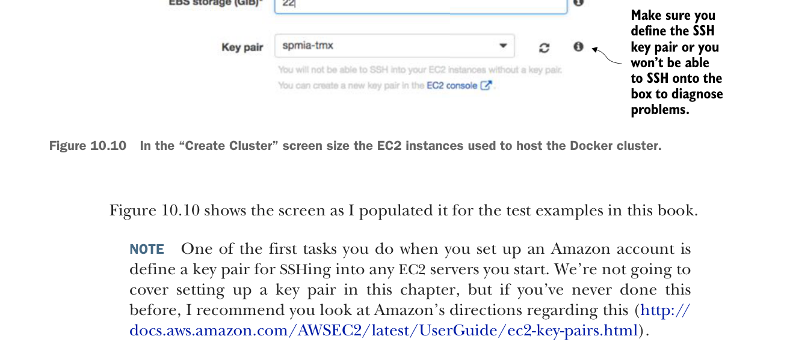

Bạn có thể chọn máy chủ t2.large vì bộ nhớ lớn (8 GB) và chi phí theo giờ thấp (0,094 đô la mỗi giờ).
Vì đây là môi trường dev, bạn sẽ chỉ chạy với một instance duy nhất.
Hãy chắc chắn định nghĩa cặp khóa SSH, nếu không bạn sẽ không thể SSH vào máy chủ để chẩn đoán sự cố.
Trên màn hình “Create Cluster”, hãy chọn kích thước các instance EC2 dùng để host cluster Docker.
Hình 10.10 cho thấy màn hình như tôi đã điền cho các ví dụ thử nghiệm trong cuốn sách này.
Tiếp theo, bạn sẽ thiết lập cấu hình mạng cho cluster ECS. Hình 10.11 cho thấy màn hình mạng và các giá trị bạn đang cấu hình.
Điều đầu tiên cần lưu ý là chọn Amazon Virtual Private Cloud (VPC) mà cluster ECS sẽ chạy. Theo mặc định, trình hướng dẫn thiết lập ECS sẽ đề xuất tạo VPC mới. Tôi đã chọn chạy cluster ECS trong VPC mặc định của tôi. VPC mặc định chứa máy chủ cơ sở dữ liệu và cluster Redis. Trên đám mây Amazon, máy chủ Redis do Amazon quản lý chỉ có thể được truy cập bởi các máy chủ nằm trong cùng VPC với máy chủ Redis.
Tiếp theo, bạn phải chọn các subnet trong VPC mà bạn muốn cấp quyền truy cập cho cluster ECS. Vì mỗi subnet tương ứng với một vùng sẵn sàng (availability zone) của Amazon, tôi thường chọn tất cả subnet trong VPC để cluster có thể dùng được.